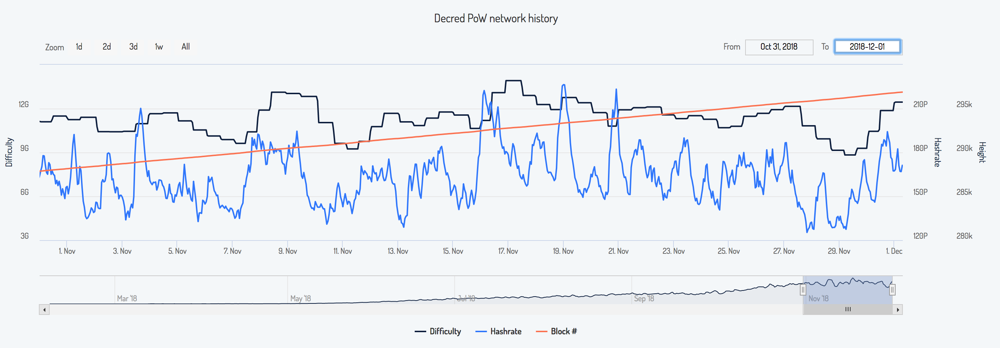
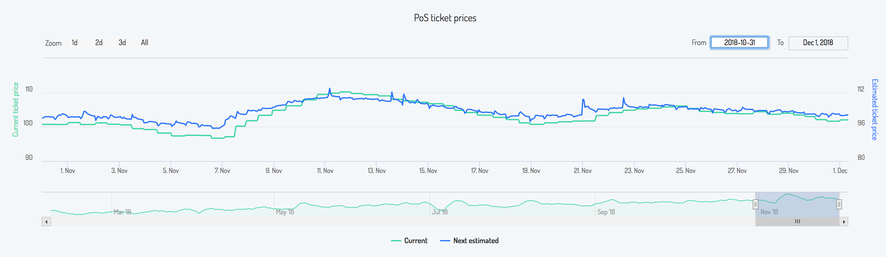
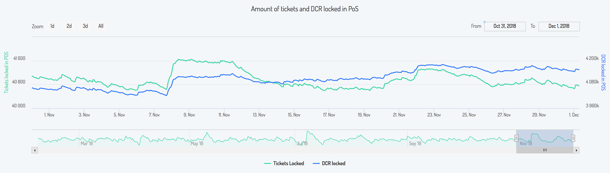
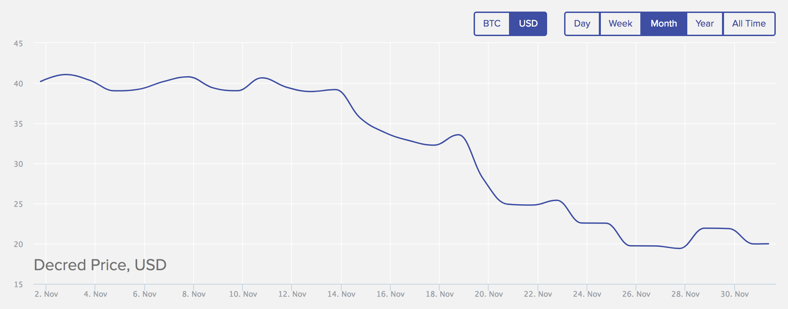
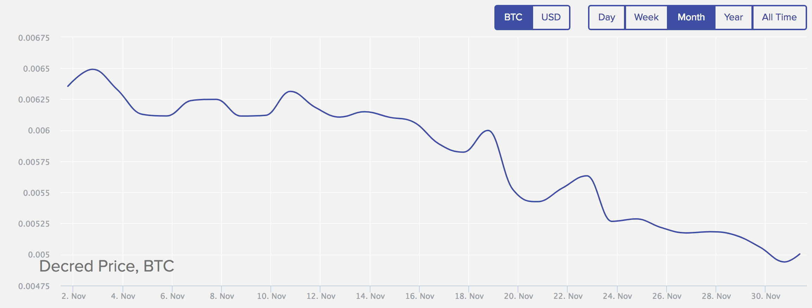
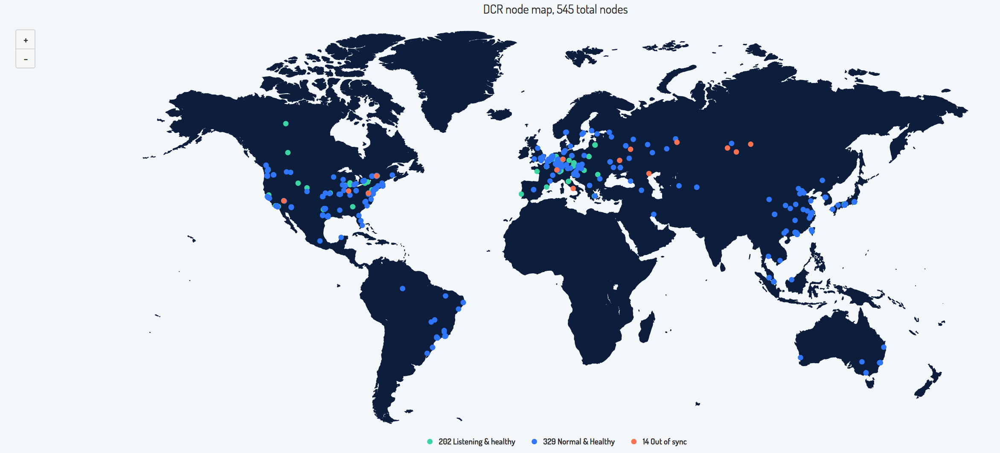

Decred月报 - 11月
Decred在11月取得激动人心的进展。社区开始从Politeia的提案系统获得好处。 持币者相继通过Decred钱包 （Decrediton或dcrcli) 积极表达对于项目未来方向的提案， 包括项目服务商管理，公共关系和区块链研究。
Decred 已进展到可以支持任何利益相关者对Decred的愿景 - 更多公司和贡献者加入Decred生态，而一些长期贡献者则根据兴趣和能力提出议案。
在社区的兴奋，成长和变化中，Decred保持项目的更新步伐。桌面和移动钱包的测试版本表现出Decred一贯对稳定和创新的传统坚持。
开发进展总结
dcrd: 上个月开始的两个重大的更改在经过大量测试后合并。第一个是UTXO反转的设置语义 随附的数据库迁移， 这是一项重要的更改，将提供更简单有效率的处理未花费的交易输出。这样做的额外好处是让区块重组测试运行时速度提高了40％。第二个是优化重组处理。新的--maxsameip参数允许限制具有相同IP地址的连接数。修复了一个从上游btcd移植过来，超级罕见的bug。
dcrwallet: 增加新的RPC，支持使用ticketbuyer v2, 购买单张票 和流动账户。另加使用替代数据库后端的能力，这对移动平台很有用。修复bugs: 监视常用钱包地址, 遗漏或双重交易, 丢失地址和交易.
一个大的锁定余额算法的改进工作已经开始，这会为 solo，选票矿池及分票投票者解决某些问题。
Decrediton: 增加功能: 用以选择SPV或全节点的新页面和显示Decred 基金会余额。自动购票器已更新到ticketbuyer v2。由于票价稳定，它的选项较少，而且比v1更易于使用。现在，用户只需要指定保留余额，账户及使用的选票矿池。大钱包的启动性能也有所改进。Politeia整合也有所改进包括反应更快的提案加载和新提案及投票的通知. UI/UX调整:更新了提案列表设计, 概览设计改进,更新 账户图标以及导航图标和微动画的改进。为了确保持续的跨平台稳定性和性能，Decrediton更新到Electron 3
提到的功能已合并到主分支中，并将在下一版Decrediton中体现。
Trezor: Model T已发布 支持Decred的最新固件 version 2.0.9。感谢 @matheusd。现在Decrediton开发员可以开始整合工作。
注意：市面发现假的Trezor One，关于如何验证和购买正版设备，请查看官方博客。
Politeia: politeiavoter 的隐私和性能通过随机的选票投票顺序, 随机投票间延迟和过滤已投票的选票得到改善。按大众要求，创建了邮件通知系统以支持对新提案和评论更新的消息。通过票证功能搜索可以验证投票。评论永久链接和可区分的作者评论已上线。新的"Abandoned"（被废弃）状态 用来处理被放弃的提案。"结束" 选项被 分成 "通过" 和 "不通过" 选项。SVG支持被关闭直至合适用来清理SVG的工具出现位置。一个小漏洞被修复了,感谢@iemlisted 的报告。及很多较小的改进和修复。
某些功能将在主网页下一次更新后才能体现。
Android:安卓版Decred钱包开发在本月实现了一次飞跃-在Google Play商店推出了预发布版本。 Play商店版本包括更新的货币转换，以本地货币显示费用和高级密码保护，能够锁定所有数据并使用访问密码。此版本还包括一个安全菜单，允许用户签署证明地址所有权的消息。 另一个成功实施的社区创新是“隐藏帐户”功能。隐藏帐户允许移动用户将资金存放在他们的移动钱包中，但资金将不会显示在主屏幕余额上。在本地聚会中交易Decred的社区成员为这项功能提供的额外隐私和安全感到兴奋。账户之间的资金转账在本月也得到了升级，只需简单的下拉选择让转账更快速简便。
iOS:iOS移动钱包目前正处于测试阶段，需要额外的开发周期才能合并Android上提供的功能集。
dcrdata: 本月集成到基本代码中的新功能包括网络哈希算力表，在导航菜单添加Decred基金会以及更详细的交易信息，例如在内存池上显示交易输出花费，在显示地址视图的交易类型和改进的时间戳信息。
预览新网页,及所有的新功能都已上线alpha网站。目前它运行的是master的v3.2.0-pre built。更稳定的beta网站运行v3.1.0-beta。最稳定的explorer.dcrdata.org运行的是v3.0.2-发布。为了与Insight链接保持一致,后者也可到mainnet.dcrdata.org访问。
在开发方面，@gozart开始了重构将javascript代码库转换到ES6模块，添加用于前端开发工具和生产资产捆绑的webpack，强制执行代码样式并将CSS转换为SCSS partials。
dcrstakepool：这是大多数(如果不是全部)VSP(选票矿池)使用的软件。自述文件更新了包含Go模块的构建说明。交易链接已从Insight更改为dcrdata。
发现并讨论了几个隐私问题。目前正在测试补丁以自托管CAPTCHA取代Google recaptcha，以避免利益相关者的指纹识别--欢迎VSP(选票矿池)运营商加入测试。已删除对Cloudflare的请求。提出了让电子邮件可选的问题。
Ticket splitting：分票测试版在11月份继续增长，每天都有分票。两个集成了分票的VSP，decredbrasil.com和decredvoting.com，除了他们网站上的指南,还发布了教程视频(葡萄牙语和英语)以及分票概述。该软件已更新，以支持SPV轻钱包模式。请阅读问题以考虑隐私问题。
Decred Slack和电报都有分票群以及VSP的分票教程。
design: Kyle 在Firethought 中发布了Decred图标动态包。以eeter.co设计的图标包为基础构建的图标包将带来“更具吸引力的Decred应用程序体验”
docs：11月对于文档来说是一个重要的月份，其中包含各种社区支持的更改和更新。VSP更改语言提案通过，证实了社区希望在所有Decred文档中将“PoS Mining”更改为“PoS投票”，并从“stakepool”更改为“Voting Service Provide(VSP)”。第一批文档的更改已合并。基金会采用“Decred Treasury”也已更新。对于那些希望更深入了解Politeia的人们，我们创建了一个新的"Politeia数据导航"文档。期待已久的Decred Glossary(Decred词汇)在本月完成并发布，@s_ben和许多支持这项工作的人付出了巨大努力提供反馈和建议。我们强烈建议使用词汇表来改善我们对共享社区的理解。
11月开发活动数据: 分布于8个存储库（repositories) 有 266 有效PRs, 268 主要提交, 44,955 行添加 及 25,448 行删除。每个存储库中有来自3-11个开发者的贡献。(图表)
人员
热烈欢迎新人的第一次贡献: logicminds (dcrd, 10月月报遗漏), @itswisdomagain (dcrdata), rocknet (decrediton), @brunobraga (politeiagui).
恭喜5位新贡献者列入decred.org: Insaf Nori (@butterfly, community manager - Middle East), Guang (@guang, community manager - Asia), Seth Benton (@s_ben, developer), Youssef Boukenken (@sef, developer), Zubair Zia (@zubairzia0, research and strategy).
@kozel 访问了建立已久coinmine.pl的运营Feeleep，深度讨论了Decred的基础设施.
我必须说，从技术角度来看，Decred的守护进程是在我所有业务经验中唯一一个未遇到过任何稳定性或同步问题的守护进程
10月的月报中有关于新的承包商公司一个简短提及。让我们来好好的介绍一下。Block 42是一家总部位于白俄罗斯明斯克的区块链开发公司，利用区块链技术为金融，保险，物流和供应链行业带来更高的透明度和效率。 他们的母公司Grinteq位于美国纽约。 目前为止的贡献团队如下：
- Nick Kaeshko (@Nick) - 联合创办人, 确保所有事情顺利进行
- Maria Pleshkova (@Maria) - UI/UX 设计师, 在选票矿池主题改革中贡献，确保和目前Decrediton的UI保持一致性。目前工作专注于Politeia的重新设计：包括UI/UX更新和新功能的实现。
- Dmitry Fedorov (@klka) - Golang开发员,目前为加快区块处理方面制作区块链索引异步（asynchronous）
- 很快将有另一成员正式加入 再次欢迎！
治理
团队开启了＃proposals 和 #research中的Politeia数据整理工作。@snr01 分享了投票数据图表。
深入讨论了低质量的提案会使得Politeia混乱，并提出了多种想法。 @richardred在Politeia Digest #4中对此进行了很好的概述。
在聊天渠道中的 #proposals 聊天室非常活跃并有着许多对提案系统及提案深入的讨论。欢迎加入 Matrix或Slack。
由@richardred整理每周的Politeia简报 “Politeia Digest” 包含着所有Politeia重要活动的细节。请查阅本月发布的第4期, 第5期及第6期。同时也可以通过这个搜索Reddit 讨论区。
本月完成投票 - 6 份
1.Decred Contractor Clearance Process
- 投票结束 - 11月21日 通过
- 法定票数：13228/8173 票，13206 通过(95.71%)
- 提案建议设立 Decred Contractor Clearance (DCC) 为服务商作为对项目参与及贡献的条件。获取DCC必需要有 3个合格服务商／贡献者担保有相关工作需要的技能。相同的，撤掉服务商资格也只需要3个合格服务商／贡献者投票撤除。
2.Wachsman Communications Proposal for Decred
- 投票结束 - 11月5日 不通过
- 法定票数：13202/8192 票，3646 通过(27.62%)
- 专业的宣传公司合作提案。要求为期6个月，每月 2万美金的经费。
3.Ditto Communications Proposal for Decred
- 投票结束 - 11月5日 通过
- 法定票数：21191/8192 票，13206 通过(62.32%)
- 专业的宣传公司合作提案。要求为期6个月，每月 2万5千美金的经费。
- 投票结束 - 11月5日 通过
- 法定票数：13141/8192 票，11854 通过(90.21%)
- 提案设立一个开源研究项目，要求 一万美金 作为起始经费，投入区块链研究并发布文章。提案通过后，第二个提案可以用来决定研究内容／题材。
5.Change language: PoS Mining to PoS Voting, Stakepool to Voting Service Provider
- 投票结束 11月5日 通过
- 法定票数：12745/8192 票，11991 通过（94.08%）
- 提案建议把一些Decred专用词更替，并提议以后类似大规模转换专用名词可以通过提案系统做决定
6.Premium Listing for Decred on Easyrabbit
- 投票结束 11月23日 不通过
- 法定票数：8756/8156 票，444 通过（5.07%）
- Easyrabbit 交易所已于10月底上线DCR交易。
- 提案要求 30 DCR 将项目升级为高级用户，以获得一些宣传福利 包括将 DCR 标志放到主页面上，低交易费，自媒体宣传DCR 等等。
截止12月6日的新提案如下
Upgrade mining algorithm to ProgPoW 由engineerking于Nov 11提交
- 作者提案把Decred的挖矿算法改成ProgPoW。
- 状态：Abandoned (被废弃）
Decred Open Source Research proposal 2 - research projects 由@richardred于Nov 21提交
- 续第一个研究提案，目标为搜集并确定研究项目想法的提案
- 状态：作者未授权开启投票
Decred integration into Crypto-ATMs由 bcashgr于Nov 24提交
- 公司名为Bcash提案要求资助把Decred整合到他们提供的提款机中。开发成本 25，000欧元 及 每月 1，650 欧元的维持费。
- 状态：投票于12月4日开启
Decred Radio Advertising, 190+ FM and AM Stations, + Intl. Satellite由ftl_ian于Nov 26提交
- 这项提案要求Decred在一个“Free Talk Live” 的电台做广告。为期13周的成本是 22,750美元
- 状态：投票于12月4日开启
Decredex由fabianreum于Nov 26提交
- 提案要求对于公司REUM Ltd开启去中心化交易所工作的资助。总预算为 1,086,500美元。
- 状态：投票于12月4日开启
Add Decred support to Coffee Wallet 由francio于Nov 29提交
- 这项提案要求资助将Decred整合到 “Coffee Wallet” 多币种钱包。要求数额为150DCR 及预期在一月初完成
- 状态：作者未授权开启投票
Stable coin - USDD由fabianreum 于Nov 29提交
- 这项提案要求资助一个Decred背书名为 USDD 的稳定币(stablecoin)项目。4年预算为 1，576，000美金。提案里提供了明细。
- 状态：作者未授权开启投票
Decred Bug Bounty Proposal由@degeri于30 Nov提交
- 这项提案为Decred建立一个bug赏金计划，通过该计划可以补偿／奖赏报告错误或漏洞的人。该提案要求6个月的预算为5,000美元，以支付设置和运营成本，并预算在此期间赏金支付的上限为100,000美元。 @degeri投入了大量精力与社区就如何运作这个赏金计划进行协商，特别是确保当前与该计划合作的Decred承包商都参与其中。
- 状态：作者未授权开启投票
DCR网络
算力

图片源：https://dcred.eu/powStats
算力: 11月算力开始大约156 PH/s 结束大约159 PH/s，之间最低为125 PH/s 最高为234 PH/s。BeePool 矿池份额大约19-30%, F2Pool 15-46%, Luxor 1.6-4%, 及 Coinmine 1.9-4%. 未命名算力保持 25-50% (低点15% 及高点75%)。矿池分布数据无法精确计算。
票价

图片源：https://dcred.eu/posStats
锁仓数额

图片源：https://dcred.eu/posStats
投票: 30日 平均票价为 103 DCR (+3.2)。价格与96.7至110.2 DCR之间浮动。锁仓数额为4.02-4.18 百万 DCR, 大约总流通量的 45.9-47.2%。
票价跌到96.7后，在单一时间窗售出了1，378票，票价即时经过9个连续涨价抬至110.2DCR。这是自从2017年7月更改票价算法，sdiff algorithm后的新高。
@permabull nino 分享了更多 其他 表示DCR锁定有上升趋势的图表。
币价

图片源：https://dcrstats.com/

图片源：https://dcrstats.com/
节点数

图片源：https://dcred.eu/nodeStats
节点: dcred.eu显示 Dec 01为止 共有 204 public listening Node 及 332 Normal Node。版本分部: 6.5% 是 v1.4.0(pre) dev builds (+0.5%), 50% 为 v1.3.0 (+5%), 25% 为 v1.2.0 (-3%), 11% 为 v1.1.2 (-3%), 5% 为 v1.1.0。
挖矿
Obelisk 开始生产 第 2-5 批矿机 并预期12月初开始发货,之后大约4周后将满足所有订单。他们在12月4日也公布了几个促销：用户可以购买 SC1 hashing boards 安装到DCR1机子上, DCR1也可转换成 第6批 SC1 矿机或由Obelisk回收。细节可参看通讯文章。
The Whatsminer D1 算力 为48 TH/s, 从预期的44 TH/s 提高了9%。Pangolin的价格为4,850美元。MicroBT的发货延迟以及价格和性能的变化引起了社区各种不同的意见。社区也提起关于最佳实践和关于分销网络以及官方经销商构成的混淆。
竞争对手Bitmain(比特大陆)宣布推出Antminer DR5，算力为34 TH/s，功率为1800 W，价格为人民币19,000元（2750美元），12月下旬发货。DR5的欧洲进口商列出12月21日的暂定交货期，价格为3299美元至EUR3291(3724美元)。
youtube上发布对于Obelisk DCR1 矿机的评论影片。加拿大创意的冷却方式照片在聊天室里泄露了。
整合
Luxor pool 公布了 给Decred矿工 3-5%算力提升
新的投票矿池
- decred.staked.us 5% 矿池费。Staked是一个提供多个加密货币矿池服务的公司，最近发布了一个如何使用他们投票矿池投Decred的教程。
- dcrpool.dittrex.com 1% 矿池费。
交易所
- Bitqist 在r/decred公布Decred的整合。交易所位置在荷兰。@Haon 报告提币没问题但存币目前未开通。
- Kaiserex自2015开始牵涉OTC交易，正式推出OTC柜台。DCR是支持的加密货币之一，法币方面支持的有 USD, EUR, GPB and JPY. 最低交易额是 50,000 欧元，费用为0.05-1%
- DragonEx 龙网交易所增加DCR/BTC交易对。
落地应用
英国假期购物者在这季节多了一个花费Decred的选择。MonetaryUnit公布 在他们夏天收购的英国市场Flubit接受DCR。部落格文中: Flubit 是个已运作8年，过去一年服务三百万购物者的电商。加密货币的集成过程非常顺畅。
Coinstop, 澳大利亚的Trezor，Ledger和KeepKey硬件钱包代理，现在已接受DCR。
外展活动
11月份的外展活动主要是规划，尽管如此，世界各地仍然举办过许多本地聚会，包括在墨尔本和胡志明市的重要活动。 @eSizeDave和@joshuam在亚太地区推广Decred方面做得非常出色。
@Dustorf发布了一篇的博客文章，详细介绍了Ditto的提案批准过程，从初步的审查，提案讨论和投票，到下一步的规划和执行。该博客在发布前在#marketing上收到了大量的反馈，展示了我们作家们的能力和技巧。大量的汇总数据，上传并与Ditto团队分享的工作已经进行中，这是为了我们可以在12月份开始运行做好的准备。 @Dustorf在12月3日星期一有一个入职通话，他和@ jy-p计划在那个星期亲自与Ditto方见面。
按照@ Dustorf的博客，初步重点将是要在定位和消息传递上获得社区的共识，然后将其转换为一些网站更新，同时还计划2019年的执行方案。Ditto将在Matrix的#marketing中公开参与讨论，敏感信息将保留给名为“Ditto PR”的新Matrix聊天室。如果您认为可以提供帮助并希望被邀请到这个聊天室，请联系@jz或@Dustorf加入。
12月将是计划筹备月，@jy-p将于1月16日至18日在美国迈阿密举行的北美比特币会议上展示“区块链时间戳应用”。其他活动可能会在12月的第一周确认，并将在#marketing中公布。
除了规划中期和长期的战略，我们的公关也会如#marketing中所述，根据当前的机会采取行动，。
@Haon在Reddit中展开了关于Ditto合作伙伴关系的期望的讨论，并根据他在Decred社区的经验以及与之前公关公司（PRWithBrains）的合作分享了其想法。
社区活动
过去
- Raedah Group 在美国，波特兰的培训及计划会议。 (照片)
- Web Summit-里斯本，葡萄牙。非常拥挤的一项活动，很多群众到访Decred展位。@moo31337给葡萄牙总理，Antonio Costa 介绍 Decred。@vj和 @jholdstock随后在这里发布了报告。@karamble 在这发布了更多有关私人区块链公司的笔记(照片: 1 2 3 4 5 整合图, 影片在底部)
- PDX Blockchain Summit & Hackathon -波特兰，美国。Raedah Group分享Decred的去中心化治理 (照片: 1 2)
- Token Forum 西雅图,美国。@oregonisaac 分享Decred和区块链治理。@Eli-RG 分享说该活动非常成功并的到许多好评。@oregonisaac在这. (photo)也提供了更多的笔记。
- Blockmaster圣保罗，巴西。@Rhama分享Decred和Politeia(照片: 1 2)
- FinTech Melbourne Community Networking-墨尔本，澳大利亚。@eSizeDave 报告: "虽然只有一周的见面会宣传时间，反应非常热烈。参与的人很高兴并要求更频繁的举办这类活动。参与的人来自金融机构，金融科技监管分析专员，初创公司，和其他区块链项目代表。两位ANZ银行的数据科学家主动的寻找这类活动并表示很巧的找到了这活动。这表示这类活动有一定的市场需求，这个活动结果很好，我们将更投入参与下一个金融科技类活动。” 随后社群里有更多讨论。(照片: 1 2)
- BlockchainFiesta克拉科夫，波兰。@kozel和@donmario和FXMag做了篇还未发布的访问。 完整的活动报告: "我们接触的一些峰会发言人表示对Decred的远见以及“打造第一，炒作第二”的精神印象深刻非常". (电视新闻报告,照片: 相册)
- Blockchain Melbourne-墨尔本，澳大利亚。@eSizeDave 先介绍了Decred,随后两位Apollo Capital代表的演讲。第一位介绍了公司的服务及如何做项目分析，强调Decred如何符合这些标准。第二位演讲人专门讲解了Decred。活动笔记：“非常有知识的人群。令人惊讶的是，尽管我们只有大约1.5周的推广，加上目前低迷的市场环境，我们还有这么多人参与投资分析。此项活动主要归功于@Zohand 与阿波罗资本的长期关系。相关讨论,这里 和这里也有相关的后期笔记。(照片)
- Lessons from DevCon4 & Web3 Summit墨尔本，澳大利亚。@eSizeDave: "该活动在RMIT区块链创新中心举行。 皇家墨尔本理工学院（RMIT）是墨尔本的一所大学，也是澳大利亚第一所，作为其经济学院的一部分，建立自己专用区块链创新中心的大学。(......）官方组织者最近从布拉格的Devcon回来，并将介绍从会议中吸取的经验分享。 他们于11月20日参加我们的活动，并邀请我们和Apollo Capital出席介绍Decred，特别是Politeia。“。活动主要是以太坊社区，但Apollo Capital的James介绍的Politeia貌似有着不错的效果。(照片)
- 胡志明，越南的与Decred晚饭中@joshuam介绍Decred。主办人(@BitcoinSaigon) 后来表示: "昨晚激发了一些非常有趣，环绕着本质，重要性和可行性的去中心化系统的讨论，在市场营销声音盖过实质内容的环境，这是非常令人耳目一新的讨论。"(照片: 1 2)
未来活动:
- The North American Bitcoin Conference-迈阿密，美国。一月16-18。@jy-p 将在主讲台上花15分钟介绍Politeia。他也会探讨更广阔的Politeia应用,包括加密货币，机构及政府角度的应用。例如代币，保存记录，及投票系统。Decred也会有一个10'x8'的活动展位,所以我们需要组织团队。我们希望社区成员可以加入我们，如果您有兴趣请联系 @Dustorf。
- Campus Party圣保罗，巴西。二月 12-17。Decred将在hackathons里有发言人和黑客马拉松专属区.
- Jalisco Talent Land 瓜达拉哈拉，墨西哥。四月22-26。Decred将有一个3x3 m 展位及 10 张峰会门票。@elian将介绍Decred（45分钟）和 Q&A（15分钟）。另外会有两个小时的分组会议。我们将在分组会议里演练如何使用Decrediton，投票流程，选票的生命周期，和如何使用Politeia。如果您有兴趣帮忙或出席请联系@elian。
@jz 发布了一些在会议上代表Decred的指南。
中文媒体／文章链接
- 老胡评测：比特币核心团队开发永不分裂的币DCR
- 区块链治理：Decred如何迭代比特币
- DCR 通过混合共识机制平衡权益分配｜标准共识评级
- 解析评级 — DCR 通过混合共识机制平衡权益分配
- 扫盲-Decred分票
英文媒体链接
Articles:
- Blockchain forks and chain splits: why we should avoid them by @Haon (medium, missed in Oct issue)
- Marco Peereboom Interview: Governance, Decred & Politeia (coinbureau.com)
- Decred Infrastructure Interviews: feeleep, Operator, coinmine.pl (medium) also in Polish)
- PR in Politeia: Process, Progress, and Pitching In by @Dustorf (medium)
- Blockchain governance: how Decred iterates upon Bitcoin by @zubairzia0 (medium)
- DCR Ticket Splitting - All you need to know! by @David (medium, reddit)
- Hash War Theater: A Costly Spectacle by @richardred (medium)
- What is Decred? by @kozel (Polish, bithub.pl)
- Decred Review – Democratic Governance Puts Users in Control (coiniq.com)
- Smaller PoW coins are in constant danger of 51% attacks – Decred (DCR) governance model is the solution (captainaltcoin.com)
- Decred Ticket Splitting by @guang (Chinese, medium)
More articles on various websites were published, but we only listed a selected few. The decred-media-tracker project is intended to track all articles.
Translations:
- Blockchain governance: how Decred iterates upon Bitcoin by @zubairzia0 - in Chinese by @guang
- Decred: Where did it all begin? by @thedecreddigest - in Spanish by @elian
- Decred Recruiting by @jy-p - in Spanish by @elian
- Politeia in Production by @jy-p - in Portuguese by @mm
- Decred Journal - October 2018 in Russian and in Italian by @DZ. This is epic work, October issue was a 53 kilobytes of text, 1.5x larger than previous record.
- Decred Infrastructure Interviews: feeleep, Operator, coinmine.pl by @kozel - in Polish by @kozel
Videos:
- Several videos were added to Decred's Texas Bitcoin Conference playlist which now has 18 videos. All 52 videos from the event are in this playlist.
- @moo31337 gave an extended interview with Paul Snow after the Texas Bitcoin Conference discussing the behind the scenes history of Decred and other open source projects.
- Videos with @moo31337 from Web Summit: Investing in Crypto, Is crypto here to stay?.
- Crypto with Chingas interviewed @joshuam about the importance of dispute resolution in a decentralized project.
Standard & Consensus rated Decred C+. The original report is in Chinese and @guang wrote a review of it in Chinese also. The weak aspects noted by the report are low social media activity, low trading volume and high liquidity risk. The strong aspects are hybrid PoW+PoS system that balances holders, miners and developers, experienced development team and better sovereignty of the community enabled by voting systems.
社区讨论
社区数据(Dec 1):
- Twitter followers 40,004 (-1598)
- Reddit subscribers 9,131 (+147)
- Matrix users 203 (+10)
- Slack users 6,353 (+82)
- Telegram users 4,642 (+213)
- YouTube subscribers 3,736 (+10)
- Facebook 3,105 (+20) followers and 2,867 (+18) likes
- LinkedIn followers: Decred Page 433 (+27), Politeia page 20 (+8)
- GitHub 447 (+17) stars and 1,159 (+41) forks of dcrd repository
通讯系统新闻：
- 创建聊天室#research处理开源研究提案工作。
- Slack到Matrix的连接受到干扰导致某些信息无法转达。
- 为了解决最近在r/decred 讨论审查事件而设立了一个新的subreddit。更多讨论. (bee: yes I'm trolling)
- 在r/reddit中增加了两项新规矩: "任何时候只能有一个价格讨论帖子" 和 "不允许喊价"。这篇文章解释背后的动机。
- 仍然在寻找合适的Discord管理员及实施防垃圾信息系统。
- 在MyEtherWallet 用户有报告指出钓鱼欺骗尝试。请大家保持警惕。
Twitter: 到底公开Politeia投票是否为好的流程投票 ; 链上治理区块链不完全一样, Decred vs Tezos治理系统。
Reddit: DCR 鲸鱼大户对于Decred来说是好是坏;使用基金会资金投资和利益冲突; 私人torrent追踪器的 Politeia 轴辐路网理论; 信任 硬件钱包; 到底已经有多少原子互换交易。
中文社区讨论
- 讨论 - @Dante正编写节点教程，希望鼓励更多人运行DCR节点。全节点完全是义务贡献没有任何短期收益，只是如果大家都能搭建全节点，网络的健壮性强。比特币现有10000多节点，所以抗打击性很强。DCR想变更安全更去中心化必需把节点数也拉起来。
- 讨论 - @Neil 与社区讨论DCR的抗分叉性。翻译文章-详细分析Decred的分叉抵抗性 重新被分享并讨论。
- 分享 - @Guang 分享翻译文章 - 区块链治理：Decred如何迭代比特币
- 分享 - @Guang 分享 微博链接终于上线到Decred项目网站社区页面，正式加入社区行列。
- 讨论 - Copay钱包出现漏洞，slack群里Dev澄清对DCR钱包不影响。
- 讨论 - 多个新提案上线，引起了社区的讨论。提案分别是Dex提案，提款机提案，和电台广播广告提案
关于月报
11月为英文第8期GitHub月报。 点击这里浏览往期月报。
中文社区
月报贡献者 @Guang @Hugo @画面
欢迎同时关注英文月报了解更多最新消息
月报相关意见欢迎提交到Github